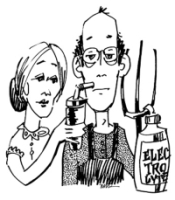
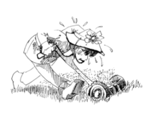

This page has usage examples for the following words:

body temperature 体温 たいおん
Celsius (℃) 摂氏 せっし
dehydration 脱水症状 だっすいしょうじょう
Fahrenheit ( °F） 華氏 かし
fever 発熱 はつねつ
Fever goes up 熱が上がる ねつがあがる
Fever goes down 熱が下がる ねつがさがる
heatstroke 熱射病 ねっしゃびょう
hyperthermia 高熱（体温上昇）
こうねつ（たいおんじょうしょう）
sunstroke 日射病 にっしゃびょう
sweating, perspiration 発汗 はっかん
My grandson (granddaughter) was sleeping by a sunny window.
孫が、日の当たる窓際で寝ていました。
まごが、ひのあたるまどぎわで ねていました。
When I went to see him/her after a while, he/she was limp and his/her face was flushed.
気がつくと、ぐったりして、顔が赤くなり、顔がほてっていました。
きがつくと、ぐったりして、かおがあかくなり、かおがほてっていました。
We'll take his temperature.
体温を測ります。
たいおんをはかります。
While playing tennis at a park on Sunday afternoon, I suddenly felt dizzy and blacked out.
日曜日の午後、公園でテニスをしていて、突然、めまいがして倒れました。
にちようびのごご、こうえんでテニスをしていて、とつぜん、めまいがしてたおれました。
Drink lots of water. (liquids)
水分の補給を充分にしてください。
すいぶんのほきゅうを じゅうぶんにしてください。
Do I have to take salt as well as water?
水分とともに、塩分も必要ですか。
すいぶんとともに、えんぶんもひつようですか。
My friend's son died of a heatstroke.
友達の息子が、熱射病で亡くなりました。
ともだちのむすこが、ねっしゃびょうで なくなりました。
I'd like to know how to prevent it from occurring.
どんな予防が必要ですか。
どんなよぼうがひつようですか。
You must make sure to keep the room cool.
部屋を涼しくするように。
へやをすずしくするように。
Avoid exercise while it is hot.
暑い間は、運動は避けるように。
あついあいだは、うんどうはさけるように.。

A conversation between a patient and a doctor about heatstroke
Patient:
During summer, it can be hotter than body temperature for a few days during summer. We also hear the news that young children left in a car died of dehydration. When we were kids, we were told by teachers and parents to wear a hat when going out. How does the body regulate body temperature? What is the difference between Celsius and Fahrenheit?
夏期には、気温が体温の平熱を超える日が何日かあります。また、駐車した車の中に幼い子供を残して、脱水症状のため死亡したというニュースも聞きます。私達が子供の頃には、夏になると日射病にならないように、出かける時には帽子をかぶるように、先生や親から言われました。体温の調整というのは、体内でどのようにして行われているのですか。
摂氏と華氏の比較も教えてください。
Doctor:
First, Celsius and Fahrenheit are explained. Both have been used since the 18th century (Fahrenheit since 1724, Celsius 1742). The freezing point is 0 in Celsius and 32 in Fahrenheit, and the boiling point is 100 in Celsius and 212 in Fahrenheit. Between these two points, Celsius can be divided into 100 and Fahrenheit into 180 (the latter can be divided more than the former). Celsius and Fahrenheit can be converted to each other using the following formulas.
C to F F=1.8C+32
F to C C=5/9(F-32)
まず、摂氏と華氏を簡単に説明しまと、双方とも18世紀に使われ始めました（華氏1724年、摂氏1742年）。氷点を摂氏は0度、華氏は32度に、沸点を摂氏は100度、華氏は212度としました。両点の間を摂氏は100に、華氏は180に分割できます（後者でより細かに分割できる）。摂氏と華氏間の転換には次の式を用います。
（摂氏の0°は、華氏の32 °F せっしの0°は、かしの32 °F）
摂氏から華氏へ F=1.8C+32
華氏から摂氏へ C=5/9(F-32)
For very rough conversion, it may be helpful to remember that for every 5 degree increase in Celsius, Fahrenheit increases 10 degrees. (40°F is about 5°C, 50°F is about 10°C, 60°F is 15°C, so forth). Most countries use Celsius, the exception being the U.S.A. By using Fahrenheit, when the temperature goes down fairly low, you don’t have to say minus so--and--so repeatedly.
おおよその見当をつけるには、華氏が10度変わる毎に、摂氏が5度毎変わると覚えておきます（華氏40度は摂氏5度、華氏50度は摂氏10度、華氏60度は摂氏15度のように）。ほとんどの国で摂氏が用いられいます。例外が米国ですが、かなり気温が低下する冬季にもやたらにマイナス何度といわなくても良い利点があります。
A typical example of the elevation of body temperature is when we are infected by bacteria and virus. Various cells in the body, reacting to these invading foreign bodies, work on the brain. Thus, fever appears. In another situation which is unrelated to the above example, the body temperature becomes elevated when the body cannot adjust itself to the surroundings. In an environment of high temperature and high humidity, the body heat cannot escape through perspiration. The body temperature continues to elevate. If the environment is also poorly ventilated, the body temperature goes even higher. In other words, high temperature and high humidity should be avoided, and if doing so is impossible, good ventilation (using a fan) and sufficient hydration are essential. Particularly, the elderly and young children must be observed closely. Exercise in hot seasons may cause heatstroke because of the combination of elevation of body temperature and dehydration through perspiration. In cases of heatstroke (sunstroke is a form of heatstroke), move to a cool area, apply ice packs, if possible, and call an ambulance.
体温が上昇する典型的な例は、細菌やウイルスに感染した場合で、その際は、体内の各種の細胞が反応して脳に働き、熱となって現われます。これとは無関係に、周囲の状況に身体がうまく機能できず、体温が上昇してしまう場合があります。高温多湿の環境では、発汗によって熱を発散することが出来ず、体温が上昇し続けます。換気が充分でない所では、更に、その傾向に拍車をかけることになります。言い換えれば、高温多湿を避け、それができない状況であれば、換気（扇風機等）と水分補給に努めることが大切です。特に、老人や幼児は、夏期には充分な気配りが必要です。暑い時期に運動すると、体温上昇に加えて、発汗により水分不足となり倒れるという事態（熱射病）になります。熱射病（日射病はこのうちの一つ）になったと思われる場合は、ただちに涼しい場所に移し、可能ならば氷枕などを身体にあてがい、救急車に連絡してください。
My two cents 一言おせっかい
My two cents worth of advice. It may or may not be worth a lot, but this is what I think or what I think you should do. If one is accustomed to the convenience of air conditioning, one tends to forget the force of nature.
冷房文化に慣れると、自然の力をうっかり忘れてしまいがちです。
[ne02]
| © 1995-2013 NACOS International Institute. All Rights Reserved. |